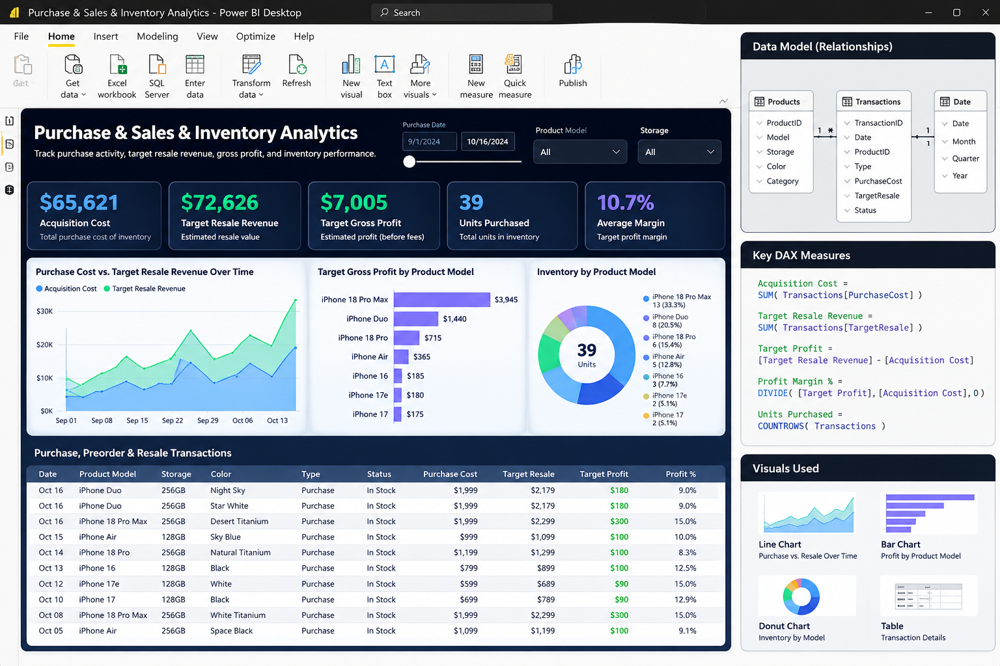

Purchase & Sales & Inventory Analytics
Power BI-style report visual: purchases, target resale revenue, profit, inventory mix, and transaction history.

This is a designed visual representation of a Power BI report and data model, not a live Power BI file. All transaction values and results are illustrative sample data; profit is a target estimate, not verified earnings.